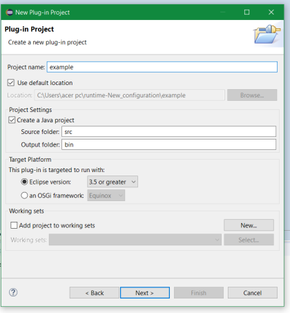

Create configuration
Step 1: Select wizard
To create a new configuration, select "Plug-In Project" in "File -> New -> Other..."
Step 2: Name the project
After clicking "Next", it is required to choose a name for the project. Afterwards click "Next" until the option to select templates for the plug-in can be seen.

Step 3: Select template
The "Slicing Configuration Project" should be chosen here. Then click "Next".
Step 4: Select models to import
Use the "Filter" option to search for a specific model or scroll through the selection on the left. Select the model you want to add and
click "Add", click "Remove" if you want to remove a specific model. Multiple selections are possible. At least one model needs to be selected
to finalize the creation of a new configuration.
Step 5: Further options
The last page of the wizard shows a number of options that can be customized. Click "Finish" to create the project.

XML Encoding: Defines the encoding-variation of the XML-File that is to be saved.
Name: The name of the configuration.
Description: The description does not need to be filled out, but can be used to describe the configuration.
Slicing Mode: This selection determines the mode of Slicing applied to the model. The default selection is "Bi-Directional", with
"Forward" and "Backward" being additional modes.
Check Multiplicity: If checked, the multiplicity of relations between objects will be included in the configuration.
Constraint Interpreter ID: This drop down menu is used to select the interpreter to be used in the configuration. In our example an OCLConstraintInterpreter is used.
Step 6: Accessing the configuration
To open the configuration, search the newly created project in the "Project Explorer". There, open the folder "Configurations" to open the file.